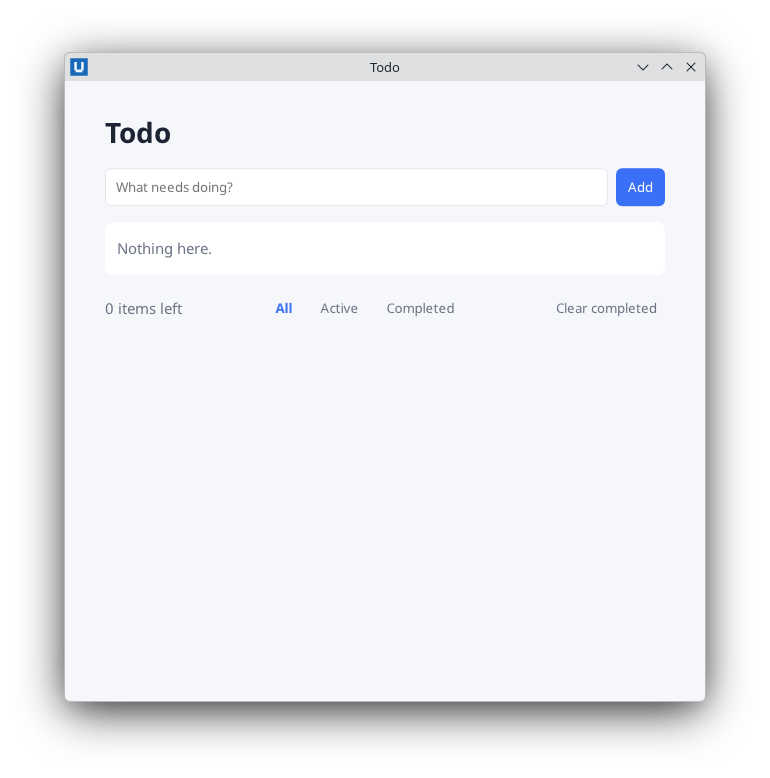
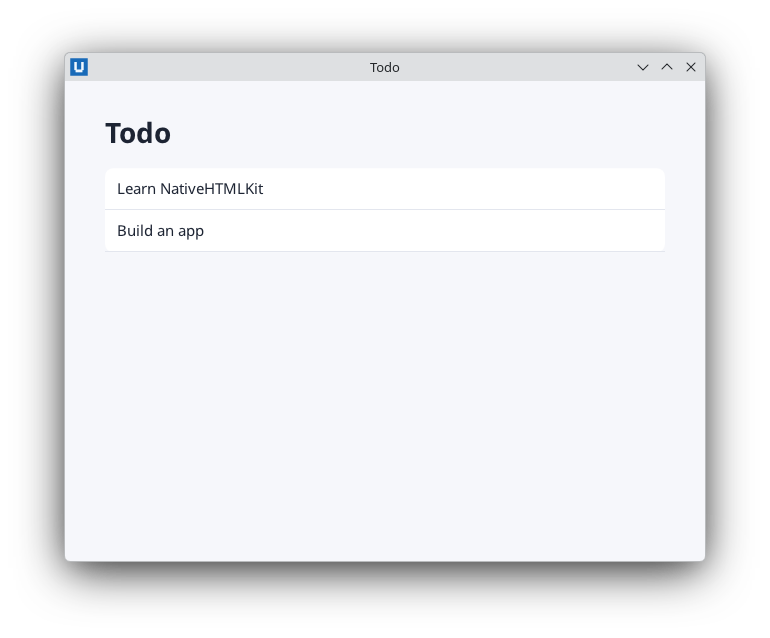
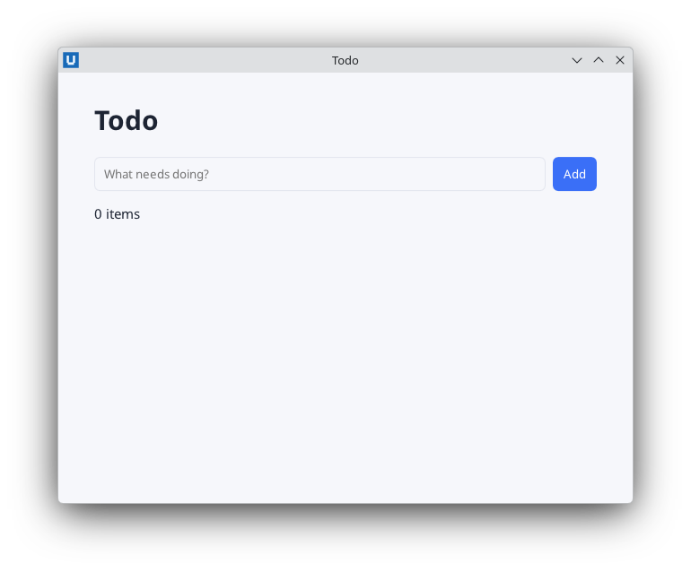
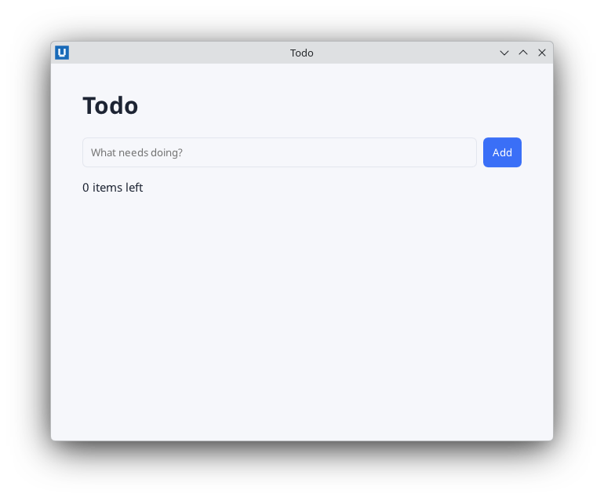

Tutorial: build a todo app¶
In five steps you build a complete desktop todo list with the NativeHTMLKit Python SDK: a native window with HTML and CSS, adding items with a form, completing and deleting them, editing in place with keyboard support, and saving everything to a JSON file.
Every step is a complete program in examples/tutorial/; the final
result is examples/todo.py. All of them are started and checked by this
repository's test suite against the real native host.

Real capture on KDE Plasma 6.6 Wayland with the released packages.
You need Python 3.10+ on Linux x64 (glibc 2.39+) or Windows x64, and about 30 minutes.
python -m pip install nativehtmlkit # or: uv add nativehtmlkit
nativehtmlkit-python version # prints the SDK and bundled host versions
Step 1: a window with HTML and CSS¶
Create todo.py:
from nativehtmlkit import Application
PAGE = """<!doctype html>
<html><head><meta charset="utf-8"><style>
body { margin:0; background:#f6f7fb; color:#1d2433; font:15px/1.4 sans-serif; }
main { max-width:560px; margin:32px auto; padding:0 20px; }
ul { list-style:none; padding:0; background:#fff; border-radius:8px; }
li { padding:10px 12px; border-bottom:1px solid #e3e6ee; }
</style></head>
<body><main>
<h1>Todo</h1>
<ul id="todos"><li>Learn NativeHTMLKit</li><li>Build an app</li></ul>
</main></body></html>"""
def main() -> None:
with Application.start(name="Todo") as app:
app.open_html(PAGE, title="Todo", width=640, height=480)
app.run() # returns when the user closes the window
if __name__ == "__main__":
main()
Run it with python todo.py. A native window appears; the HTML and CSS are rendered by the Rust
host. There is no browser and no JavaScript.
What happened:
Application.start()started the native host, and the host rantodo.pya second time as its supervised backend. In that second runstart()returned a connectedApplication. That is why all work lives inmain()behindif __name__ == "__main__":: anything at module level would run twice. (Lifecycle explains the details.)app.open_html(...)created a window and loaded the page into it.app.run()told the host the app is ready and waits until it quits. Closing the window quits.
Full file: step1_window.py.

Real capture on KDE Plasma 6.6 Wayland with the released packages.
Step 2: add items with a form¶
Replace the static list with a form and an empty list:
<form id="new-form">
<input id="new-title" type="text" placeholder="What needs doing?" required>
<button id="add" type="submit">Add</button>
</form>
<ul id="todos"></ul>
<p id="count">0 items</p>
and handle the form's submit event in main():
import html
with Application.start(name="Todo") as app:
window = app.open_html(PAGE, title="Todo", width=640, height=480)
doc = window.document
titles: list[str] = []
def render() -> None:
# html.escape: a title such as "<b>" is shown as text, never parsed as markup.
doc.replace_html("todos", "".join(f"<li>{html.escape(t)}</li>" for t in titles))
doc.set_text("count", f"{len(titles)} items") # set_text never parses markup
def on_submit(_event: dict) -> None:
title = doc.get_value("new-title").strip()
if title:
titles.append(title)
doc.set_value("new-title", "")
render()
doc.on("submit", on_submit, element="new-form")
app.run()
New ideas:
- Events.
doc.on("submit", on_submit, element="new-form")callson_submitwhenever that form is submitted: by clicking Add or by pressing Enter in the field (HTML implicit submission).requiredmakes the host refuse an empty submission before Python sees it. - Reading and writing controls.
get_valuereads what the user typed;set_valueclears it. - Rendering. The Python list is the source of truth;
render()rebuilds the<ul>from it withreplace_html. - Escaping.
replace_htmlparses HTML, so every piece of user text goes throughhtml.escape.set_textandset_valuenever parse markup and need no escaping. (Security)
Full file: step2_add.py.

Real capture on KDE Plasma 6.6 Wayland with the released packages.
Step 3: complete and delete items¶
Each item becomes a small structure with a checkbox and a Delete button. Ids encode the item number and the action:
def row(todo: dict) -> str:
n = todo["id"]
return (f'<li id="todo-{n}" class="{"done" if todo["done"] else ""}">'
f'<input id="todo-{n}-done" type="checkbox"{" checked" if todo["done"] else ""}>'
f'<span class="text">{html.escape(todo["title"])}</span>'
f'<button id="todo-{n}-delete" class="plain">Delete</button></li>')
Instead of subscribing to every button, subscribe once to the list:
def parse(element: str):
# "todo-7-delete" -> (7, "delete")
parts = element.split("-")
return (int(parts[1]), parts[2]) if len(parts) == 3 and parts[1].isdigit() else (None, None)
def on_change(event: dict) -> None:
todo_id, action = parse(event["element"])
if action == "done":
next(t for t in todos if t["id"] == todo_id)["done"] = bool(event.get("checked"))
render()
def on_click(event: dict) -> None:
todo_id, action = parse(event["element"])
if action == "delete":
todos[:] = [t for t in todos if t["id"] != todo_id]
render()
doc.on("change", on_change, element="todos")
doc.on("click", on_click, element="todos")
element="todos" also matches events whose target is inside the list. Every event names the
nearest element with an id in event["element"] and lists all identified ancestors in
event["path"], so a click on the Delete button of item 7 arrives with
element == "todo-7-delete". The checkbox reports its new state in event["checked"]. Because the
subscription lives on the list, re-rendering the items never requires re-subscribing.
A little CSS strikes through completed items:
li.done .text { text-decoration: line-through; color: #6b7385; }
Full file: step3_complete_delete.py. More on
delegation in events and callbacks.

Real capture on KDE Plasma 6.6 Wayland with the released packages.
Step 4: edit in place, with the keyboard¶
The handlers now share state (todos, next_id, the item being edited), so this step moves them
into a small class. An Edit button switches one row into an inline form:
def row(self, todo: dict) -> str:
n, title = todo["id"], html.escape(todo["title"])
if n == self.editing:
# Enter in this field submits its form; Escape is handled in on_key.
return (f'<li id="todo-{n}"><form id="edit-form-{n}">'
f'<input id="edit-title" type="text" value="{title}"></form></li>')
...
html.escape also protects the value="..." attribute (it escapes quotes). One submit handler
serves both forms:
def on_submit(self, event: dict) -> None:
if event["element"] == "new-form":
... # add, as before
elif event["element"].startswith("edit-form-"):
title = self.doc.get_value("edit-title").strip()
if title:
self.find(self.editing)["title"] = title
self.editing = None
self.render()
Starting an edit renders the input and moves the keyboard focus into it:
elif action == "edit":
self.editing = todo_id
self.render()
self.doc.focus("edit-title")
And Escape cancels, via a keydown subscription on the list:
def on_key(self, event: dict) -> None:
# keydown events carry "key" (for example "Enter", "Escape", "a") and modifier flags.
if event.get("key") == "Escape" and self.editing is not None:
self.editing = None
self.render()
self.doc.on("keydown", self.on_key, element="todos")
Full file: step4_edit_keyboard.py.

Real capture on KDE Plasma 6.6 Wayland with the released packages.
Step 5: save to a JSON file and polish¶
The finished app, examples/todo.py, adds persistence, filters,
"Clear completed", an empty state and a theme that follows the desktop's dark mode.
Where to store data. The host knows per-application directories. Give the app a stable id, then ask for its data directory:
APP_ID = "org.nativehtmlkit.examples.todo"
with Application.start(name="Todo", app_id=APP_ID) as app:
store = Path(app.rpc.call("desktop.paths")["data"]) / "todos.json"
build(app, store)
app.run()
desktop.paths is a public host method (via the raw RpcClient); on Linux
it returns XDG directories, on Windows AppData folders. It does not create them.
Load and save safely. A missing or broken file starts an empty list; writes go to a temporary file first and then replace the old one, so a crash never leaves half a file:
def load_todos(path: Path) -> list[dict]:
try:
data = json.loads(path.read_text(encoding="utf-8"))
except (OSError, ValueError):
return []
return [{"id": int(x["id"]), "title": str(x["title"]), "done": bool(x["done"])}
for x in data if isinstance(x, dict) and {"id", "title", "done"} <= x.keys()]
def save_todos(path: Path, todos: list[dict]) -> None:
path.parent.mkdir(parents=True, exist_ok=True)
temporary = path.with_name(path.name + ".tmp")
temporary.write_text(json.dumps(todos, indent=2, ensure_ascii=False), encoding="utf-8")
os.replace(temporary, path)
Every action ends in changed(), which saves and re-renders.
Testable actions. The handlers only translate events into calls such as add(title),
toggle(id, done), rename(id, title) and delete(id). Those methods can be called directly,
which is how tests/integration/example_checks.py drives the app headless: it submits the form
with document.request_submit("new-form"), calls the actions, and reads the result back with
get_text, query_nodes and the saved JSON file.
Styling with the desktop theme. CSS custom properties plus a media query switch the palette when the desktop is in dark mode:
:root { --bg:#f6f7fb; --card:#fff; --text:#1d2433; --accent:#3a6ff7; }
@media (prefers-color-scheme: dark) {
:root { --bg:#141923; --card:#1d2433; --text:#e8ecf5; --accent:#7aa2ff; }
}
body { background:var(--bg); color:var(--text); }
Run the finished app:
python examples/todo.py
Test it without a desktop¶
The host has a headless mode for automated tests. It runs the whole protocol without native windows (and without user input):
NATIVEHTMLKIT_TEST_MODE=1 python examples/todo.py # PowerShell: $env:NATIVEHTMLKIT_TEST_MODE=1
Combine it with request_submit, set_value and read-back methods to test behaviour in CI.
Where next¶
- How-to guides: forms and validation, multiple windows, file dialogs, background threads, asyncio, live bitmaps, packaging.
- Examples: fourteen more applications.
- API reference.
Source: nativehtmlkit-python/docs/tutorials/todo-app.md · edit the page there.